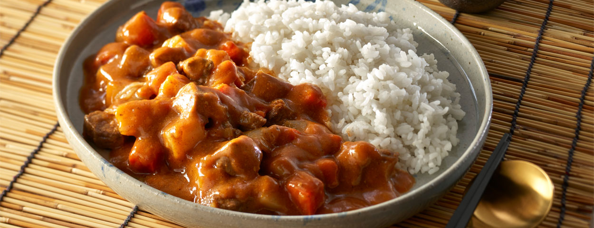

<- Home
Japanese Curry

Description
Enjoy an easy, hearty meal that can be made in under an hour.
Ingredients
- 450 g / 1 lb Beef (or Chicken, Lamb, Shrimp), chopped
- 1 3/4 (350 g / 13 oz) Medium Onions, minced
- 1/2 (100 g / 3.5 oz) Medium Carrot, chopped
- 1 (150 g / 5 oz) Medium Potato, chopped
- 1 Tbsp Vegetable oil
- 540 ml Water (Can be Chicken/Mushroom stock, dillute with water to your taste)
- 1 pack S&B Golden Curry Sauce Mix 92g (Or another brand of your choosing)
- However much rice you want on the side
Steps
- Stir-fry meat and vegetables:
with oil in a large skillet on medium heat for approx. 5 min.
- Add water and bring to boil:
Reduce heat, cover and simmer until ingredients are tender, approx. 15min.
- Turn the heat off, break S&B Golden Curry Sauce Mix into pieces and add them to the skillet:
Stir until sauce mixes are completely melted. Simmer approx. 5 min., stirring constantly.
- Serve hot:
over rice.